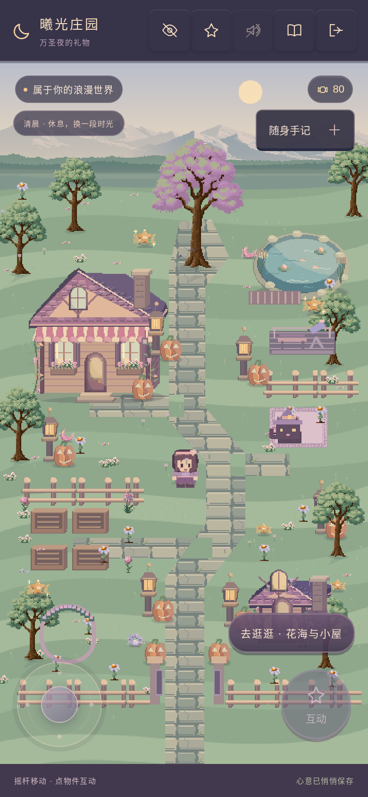
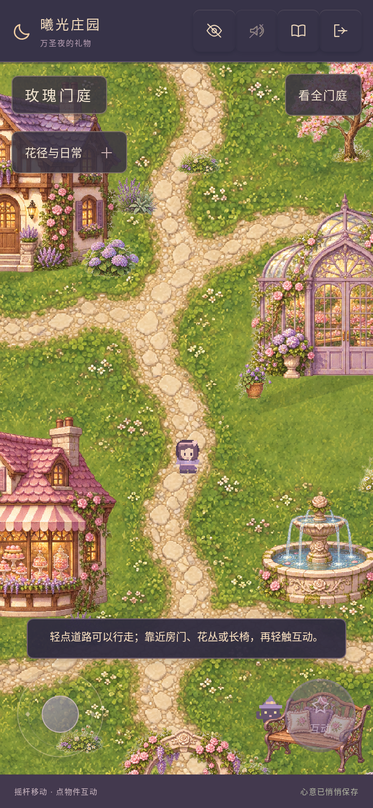
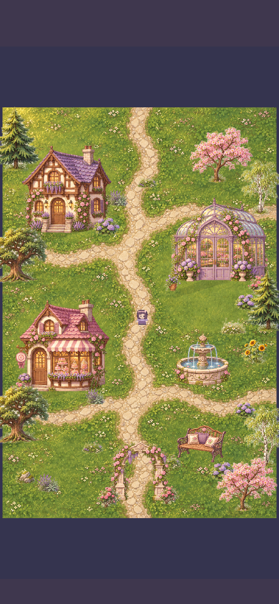
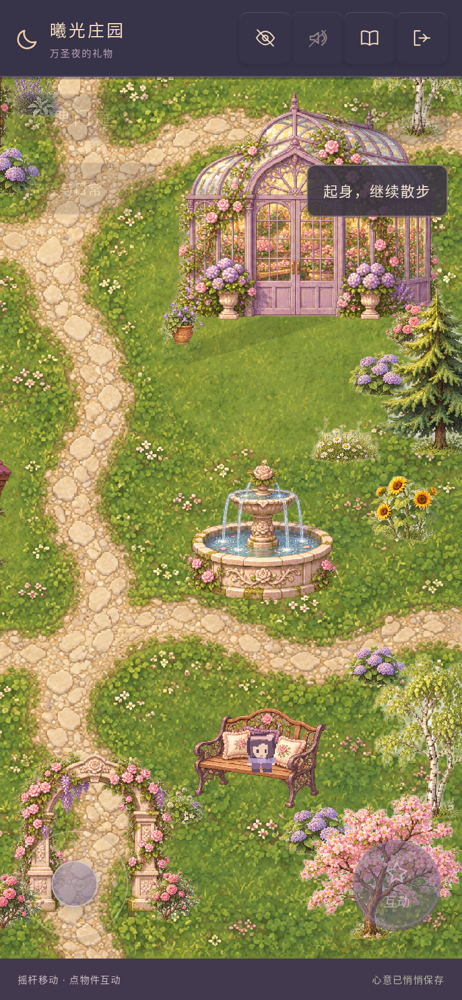
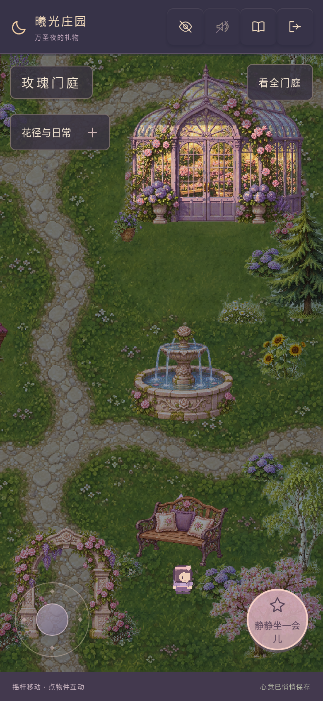
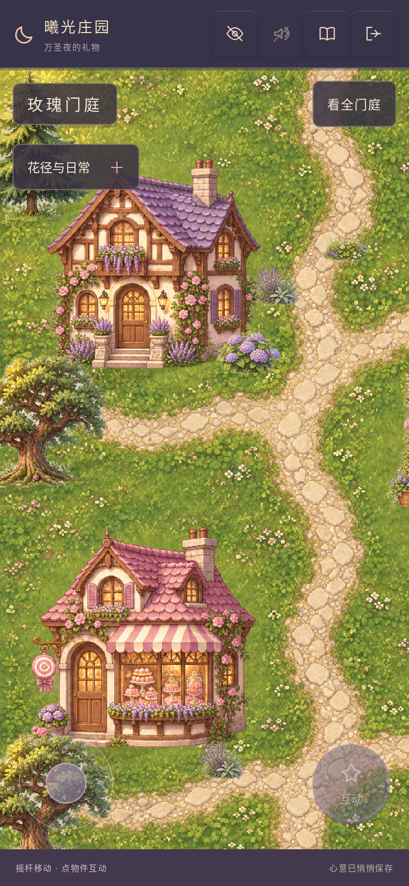
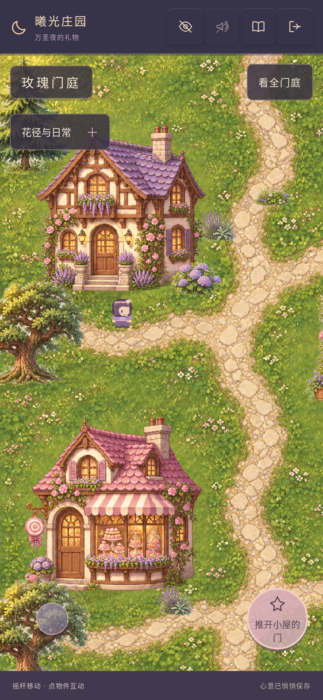
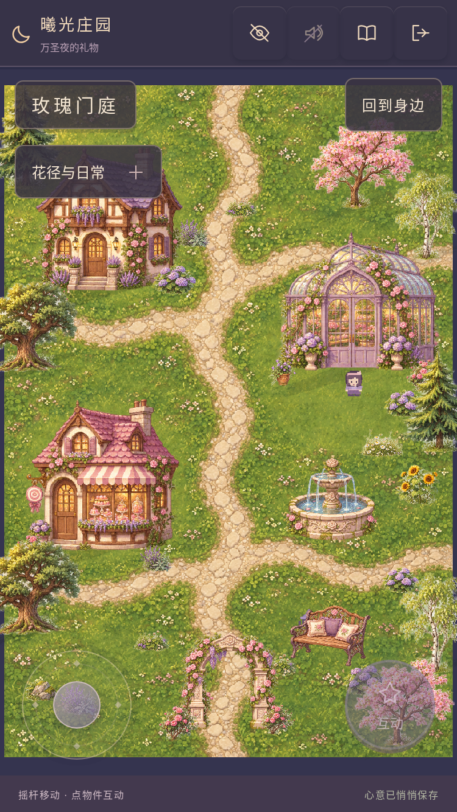

从一张原画，走向一整个世界
本轮完成全世界审计、布局与素材规范，并把「玫瑰门庭」做成真实可走、可遮挡、可进出建筑的主世界样板。全地图尚未完成重制。
同一手机视口 · 实际游戏对比
390×844、DPR 2，同一继承存档与清晨条件。新旧区域布局与相机位置不同，不伪称同一机位。全部图片来自真实 Phaser 游戏；未使用概念图代替实机。




一片完整可走的门庭
35个独立物件、18个环境素材帧、独立地形与碰撞，按脚底Y排序遮挡。房门接回已完成的高清花铺、现有小屋与工坊；花径接回原花园、花海和湖畔。花朵采入实际库存，进花铺可以出售与包装。

坐下与夜间窗灯




建筑前后 · 真正的遮挡




375×667 小屏幕

当前完成度与明确差距
已完成世界规划和门庭样板，旧场景玩法已接通。森林、花谷、湖岸、风车果园、山顶、高清室内和遗迹三层仍按规划待重制；没有空入口冒充已完成区域。
人物仍是原32×40动画，植物细边仍需精修。门庭暂用晴天地形，四时段是材质/阴影/窗灯预览，并非四套专门重绘的景色；雨雪和全世界无缝地形过渡还需素材。
已通过模拟 Chromium/WebKit 的真实操作、完全断网重开与旧玩法回归。真机iPhone的长时性能仍待验收；无头云端帧率不能当作手机帧率。详细数据见验证记录。